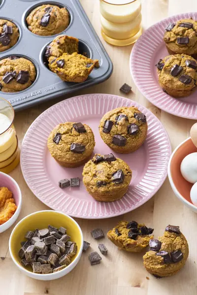

Flourless Pumpkin Chocolate Muffins

Ingredients
- 1 cup pumpkin puree
- 1/2 cup pure maple syrup, honey, or agave
- 2 large eggs
- 1 teaspoon vanilla extract
- 1/4 cup cashew or almond butter
- 1/4 cup unsweetened plant based milk
- 2 1/4 cup rolled oats (gluten-free rolled oats if needed)
- 1 teaspoon baking powder
- 1/2 teaspoon baking soda
- 1/2 teaspoon salt
- 1 teaspoon ground cinnamon
- 1 1/4 cup chocolate chips or chunks, divided (1 cup in batter and 1/4 cup for topping)
Steps
- Preheat oven to 350°F and grease 12 cup muffin tin (you can also place paper liners in muffins cups without greasing).
- Place all the ingredients (except for the chocolate chips) in a blender, starting with the wet ingredients, followed by the dry.
- Blend for 10 seconds or until oats begin to become fine (it's okay if there are some bigger oat pieces left). Add 1 cup chocolate chips then blend for another 10 seconds.
- Using a quarter cup ice cream scoop or spoon, divide batter between 12 muffin cups filling 3/4 to the top.
- Divide the remaining 1/4 cup chocolate chips on top of the muffins.
- Bake for 20 minutes or until a toothpick comes out clean.
Recipe by Weelicious, from Weelicious. Saved here for personal use; the original has the full notes, tips and photos. Open original